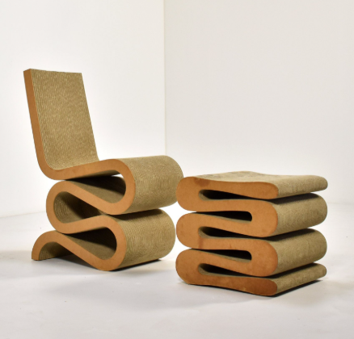
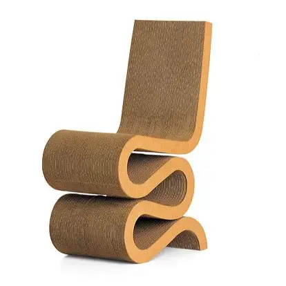

Descripción
La Wiggle Side Chair es una pieza icónica que destaca por su forma sinuosa en "S". Frank Gehry logró transformar un material humilde y cotidiano como el cartón en una obra maestra del diseño escultural y de mobiliario.
A pesar de estar hecha de cartón, su diseño arquitectónico y pliegues ocultos le otorgan resistencia, estabilidad y comodidad.
Materiales
- Estructura principal de cartón corrugado.
- Bordes laterales de tablero de fibra de alta densidad (Hardboard / MDF).
Contexto
Diseñada en 1972, forma parte de la famosa serie de muebles "Easy Edges". Gehry quiso darle una nueva dimensión estética al cartón, demostrando que con ingenio arquitectónico se podía crear mobiliario de alta calidad.
Curiosidades
La serie de muebles de cartón tuvo tanto éxito que Frank Gehry decidió dejar de producirla temporalmente, ya que temía que su fama como "diseñador de muebles" eclipsara su verdadera pasión: la arquitectura.